a finite automaton is a 5-tuple 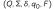, where
- 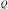 is a finite set called the states,
- 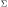 is a finite set called the alphabet,
- 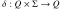 is the transition function,
- 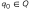 is the start state, and
- 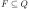 is the set of accept states.
a configuration of a finite automaton 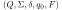 is an element of 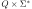. the current configuration of an automaton is a pair
given a DFA 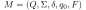,
for configurations  such that 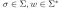, we write 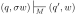 iff 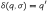.
such that 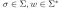, we write 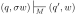 iff 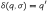.
for configurations 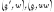, where 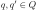, 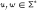 and 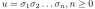 we write 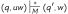 iff there exist 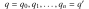 where 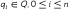 such that 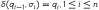.
if then iff 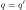.
a DFA accepts a string 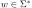 if 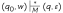 for  .
.
given a DFA , we denote by 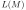 the language of all words that  accepts:
accepts:
we say recognizes the language . and call a regular language.
let be a finite automaton and let 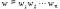 be a string where each is a member of the alphabet , then accepts 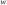 if a sequence of states 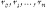 in exists with three conditions:
- 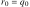,
- 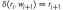, for 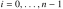, and
- 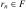.
condition 1 says that the machine starts in the start state. condition 2 says that the machine goes from state to state according to the transition function. condition 3 says that the machine accepts its input if it ends up in an accept state. we say that recognizes language 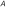 if 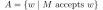.
describes how to build automatons in detail.
![\begin{tikzpicture}[initial text=, >={Stealth[round]}, node distance=2cm]
\node[state, initial] (q_0) {\(q_0\)};
\node[state, right of=q_0] (q_1) {\(q_1\)};
\node[state, right of=q_1] (q_2) {\(q_2\)};
\node[state, right of=q_2, accepting] (q_3) {\(q_3\)};
\path[->] (q_0) edge node [above] {\(b\)} (q_1) % from q0 to q1
(q_0) edge [loop below] node {\(a\)} (q_0) % from q0 to itself
(q_1) edge node [above] {\(b\)} (q_2) % from q1 back to q2
(q_1) edge [bend left=45] node [below] {\(a\)} (q_0) % from q1 to q0
(q_2) edge [bend right=45] node [above] {\(a\)} (q_0) % from q2 to q0
edge node [above] {\(b\)} (q_3) % from q2 to q3
(q_3) edge [loop below] node {\(a,b\)} (q_3) % from q3 to itself
;
\end{tikzpicture}](ltx/57dd0adbbdc.svg)
a string input starts at 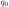, if we detect an 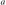, we move forward to the state 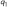 which represents a progress of 1 in detecting 3 occurrences of 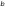, if the next character is in , our progress would be cancelled and we go back to , otherwise we move to 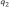, if we detect a we move to the accept state and stay there since we've achieved our goal of detecting 3 's, otherwise we "cancel our progress" and go back to .
![\begin{tikzpicture}[initial text=, >={Stealth[round]}, node distance=2cm]
\node[state, initial] (q_0) {\(q_0\)};
\node[state, right of=q_0, initial] (q_1) {\(q_1\)};
\node[state, right of=q_1, accepting] (q_2) {\(q_2\)};
\node[state, below left of=q_2, accepting] (q_3) {\(q_3\)};
\path[->] (q_0) edge node [above] {\(a\)} (q_1)
edge [loop above] node {\(b\)} (q_0)
(q_1) edge node [above] {\(a\)} (q_2)
(q_2) edge [loop above] node {\(a\)} (q_3)
(q_2) edge [bend left=45] node [below right] {\(b\)} (q_3)
(q_3) edge [bend left=30] node [below left] {\(a\)} (q_1)
(q_1) edge [bend left=40] node [right] {\(b\)} (q_3)
(q_3) edge [bend left=40] node [below left] {\(b\)} (q_0)
;
\end{tikzpicture}](ltx/a3a5f99e7f2.svg)
at first glance this may seem impossible because DFA's cant tell the length of the string and have no record of its symbols, but it can "store" knowledge in the form of states.
here is my line of reasoning for this problem:
the possible states for this problem are
- string length is 1, so the DFA shouldnt accept, that is the state
- second-to-last seen symbol was , and the current symbol is , we should accept
- second-to-last seen symbol was , and the current symbol is , we should accept
- second-to-last seen symbol was , and the current symbol is , we shouldnt accept
- second-to-last seen symbol was , and the current symbol is , we shouldnt accept
states 4 and 5 cannot be unified into a single non-accepting state that says "last symbol wasnt " because if we're currently at a state that says "last symbol wasnt ", we cant know what the character is, we just know that before it there wasnt an , and so we wouldnt know where to move from there, this might not make much sense for the reader as its merely someone else's thoughts put into few words, so perhaps it helps to consider an automaton that unifies those states into one, how would it behave for the input string 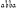?
states 2 and 3 also cant be unified into a single accepting state, because the automaton needs to be able to tell the difference between those states to decide whether it should accept the sequence 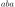, for example.
this hints that we need a total of 4 states (2 accepting, 2 non-accepting) beside the initial state, but perhaps we can reuse the initial state and unify it with state 4 or 5.
![\begin{tikzpicture}[initial text=, >={Stealth[round]}, node distance=2cm]
\node[state, initial] (q_0) {\(q_0\)};
\node[state, above right of=q_0] (q_1) {\(q_1\)};
\node[state, right of=q_1, accepting] (q_2) {\(q_2\)};
\node[state, below right of=q_0] (q_4) {\(q_4\)};
\node[state, right of=q_4, accepting] (q_5) {\(q_5\)};
\node[state, right of=q_5] (q_3) {\(q_3\)};
\path[->] (q_0) edge node [above] {\(b\)} (q_1)
(q_1) edge node [above] {\(b\)} (q_2)
(q_0) edge node [below left] {\(a\)} (q_4)
(q_4) edge node [above] {\(b\)} (q_5)
(q_4) edge [bend right] node [below left] {\(a\)} (q_3)
(q_3) edge [loop below] node {\(a,b\)} (q_3)
(q_5) edge node [above] {\(a\)} (q_3)
(q_5) edge [bend right=45] node [above] {\(b\)} (q_4)
(q_1) edge node [above right] {\(a\)} (q_3)
(q_2) edge node [above right] {\(a\)} (q_3)
(q_2) edge [bend right=45] node [above] {\(b\)} (q_1)
;
\end{tikzpicture}](ltx/ed2b2c13522.svg)